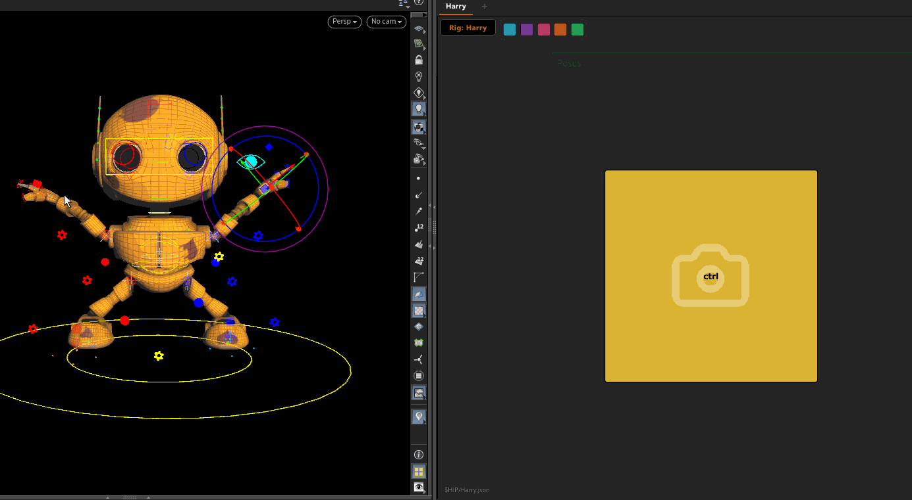
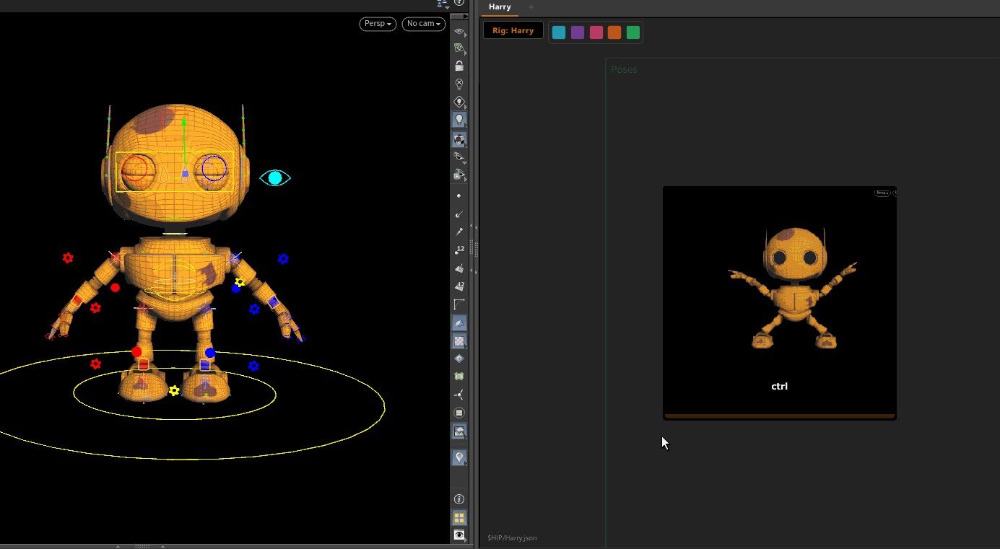

Pose Mode
Pose mode buttons store a snapshot of control values at a specific frame.
Clicking the button applies that pose back to the rig.

Capturing a Pose
- In the APEX viewport, select the controls you want to include in the pose
- Set the rig to the desired pose
- In the picker, right-click the button → Capture Pose
The button stores the pose and displays a thumbnail of the viewport at capture time.
Applying a Pose
Click the button — the stored pose is applied to the rig at the current frame.
The picker remaps the pose to the rig selected in the rig menu, so one pose button can be used across multiple characters if their control names match.
Blend Strip
Each pose button has a blend strip along its bottom edge.
Drag horizontally across the strip to blend between the current rig pose and the stored pose.
| Position | Result |
|---|---|
| Left (0%) | Current rig pose unchanged |
| Right (100%) | Full stored pose applied |

The blend is live — the rig updates as you drag. Releasing commits the blended value.
Notes
- Pose data is stored in the picker's JSON file — that is the only file you need to save and share.
- On session load the pose is re-injected from the JSON into the APEX catalog automatically — no recapture needed.